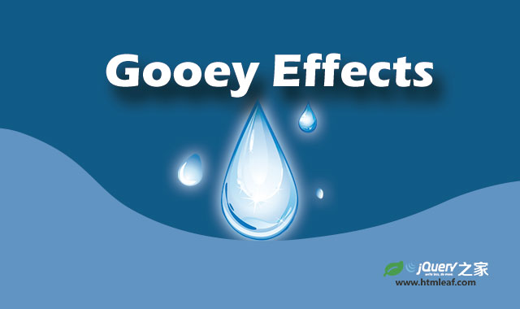
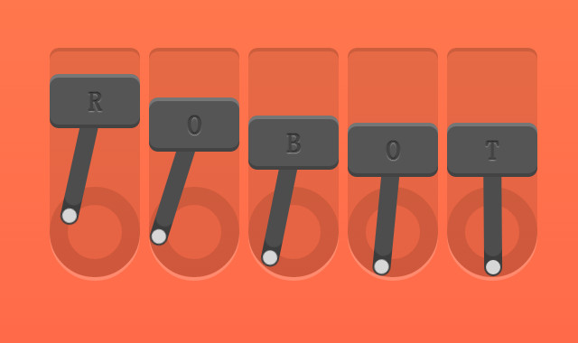

<!DOCTYPE html>
<html lang="zh" class="no-js">
<head>
	<meta charset="UTF-8" />
	<meta http-equiv="X-UA-Compatible" content="IE=edge">
	<meta name="viewport" content="width=device-width, initial-scale=1">
	<title>7种基于GSAP的SVG Loader加载动画特效 | Jump Loader_jQuery之家-自由分享jQuery、html5、css3的插件库</title>
	<link rel="stylesheet" type="text/css" href="css/normalize.css" />
	<link rel="stylesheet" type="text/css" href="css/default.css">
	<script type="text/javascript" src="js/greensock/minified/TweenMax.min.js"></script>
	<script type="text/javascript" src="js/greensock/minified/plugins/DrawSVGPlugin.min.js"></script>
	<!--[if IE]>
		<script src="http://libs.useso.com/js/html5shiv/3.7/html5shiv.min.js"></script>
	<![endif]-->
</head>
<body class="demo-1">
	<div class="container">
		<!--<header class="htmleaf-header">-->
			<!--<h1>7种基于GSAP的SVG Loader加载动画特效 <span>Jump Loader</span></h1>-->
			<!--<div class="htmleaf-links">-->
				<!--<a class="htmleaf-icon icon-htmleaf-home-outline" href="http://www.htmleaf.com/" title="jQuery之家" target="_blank"><span> jQuery之家</span></a>-->
				<!--<a class="htmleaf-icon icon-htmleaf-arrow-forward-outline" href="http://www.htmleaf.com/html5/SVG/201503261577.html" title="返回下载页" target="_blank"><span> 返回下载页</span></a>-->
			<!--</div>-->
			<!--<nav class="htmleaf-demos">-->
				<!--<a class="current-demo" href="index.html">Jump Loader</a>-->
				<!--<span>More ideas:</span>-->
				<!--<a href="index2.html">Flip Box Loader</a>-->
				<!--<a href="index3.html">Creeper</a>-->
				<!--<a href="index4.html">Squash Box Loader</a>-->
				<!--<a href="index5.html">Veggie Loader</a>-->
				<!--<a href="index6.html">Infinity Loader</a>-->
				<!--<a href="index7.html">Goo Loader</a>-->
			<!--</nav>-->
		<!--</header>-->
		<div class="content">
			<div class="svg-container" id="container">
				<svg id="loader" width="100%" height="100%" viewBox="0 0 200 200" preserveAspectRatio="xMidYMid meet">
					<path id="jump" fill="none" stroke="#383845" stroke-width="10" stroke-linecap="round" stroke-linejoin="round" stroke-miterlimit="10" d="M47.5,94.3c0-23.5,19.9-42.5,44.5-42.5s44.5,19,44.5,42.5" />
					<g stroke="#383845" stroke-width="1">
						<ellipse id="circleL" fill="none" stroke-miterlimit="10" cx="47.2" cy="95.6" rx="10.7" ry="2.7" />
						<ellipse id="circleR" fill="none" stroke-miterlimit="10" cx="136.2" cy="95.6" rx="10.7" ry="2.7" />
					</g>
				</svg>
			</div>
		</div>
		<!--<div class="related">-->
		    <!--<h3>如果你喜欢这个插件，那么你可能也喜欢:</h3>-->
		    <!--<a href="http://www.htmleaf.com/html5/SVG/201503111500.html">-->
			  <!---->
			  <!--<h3>7种炫酷HTML5 SVG液态水滴融合动画特效</h3>-->
			<!--</a>-->
			<!--<a href="http://www.htmleaf.com/css3/transform/2014100442.html">-->
			  <!---->
			  <!--<h3>css3 transform属性创意Loading加载动画效果</h3>-->
			<!--</a>-->
		<!--</div>-->
	</div>
	<!-- /container -->
	<script>
	(function() {
		var container = document.getElementById('container');
		var loader = document.getElementById('loader');
		var circleL = document.getElementById('circleL');
		var circleR = document.getElementById('circleR');
		var jump = document.getElementById('jump');
		var jumpRef = jump.cloneNode();
		
		loader.appendChild(jumpRef);

		TweenMax.set([container, loader], {
			position: 'absolute',
			top:'50%',
			left: '50%',
			xPercent: -50,
			yPercent: -50
		})

		TweenMax.set(jumpRef, {
			transformOrigin: '50% 110%',
			scaleY: -1,
			alpha: 0.05
		})

		var tl = new TimelineMax({
			repeat: -1,
			yoyo: false
		});

		tl.timeScale(3);

		tl.set([jump, jumpRef], {
			drawSVG: '0% 0%'
		})
		.set([circleL, circleR], {
			attr: {
				rx: 0,
				ry: 0,
			}
		})
		.to([jump, jumpRef], 0.4, {
			drawSVG: '0% 30%',
			ease: Linear.easeNone
		})
		.to(circleL, 2, {
			attr: {
				rx: '+=30',
				ry: '+=10'
			},
			alpha: 0,
			ease: Power1.easeOut
		}, '-=0.1')
		.to([jump, jumpRef], 1, {
			drawSVG: '50% 80%',
			ease: Linear.easeNone
		}, '-=1.9')
		.to([jump, jumpRef], 0.7, {
			drawSVG: '100% 100%',
			ease: Linear.easeNone
		}, '-=0.9')
		.to(circleR, 2, {
			attr: {
				rx: '+=30',
				ry: '+=10'
			},
			alpha: 0,
			ease: Power1.easeOut
		}, '-=.5')
	})();
	</script>
</body>
</html>